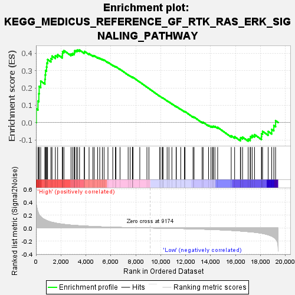
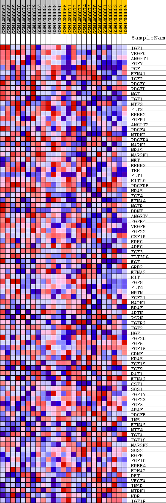
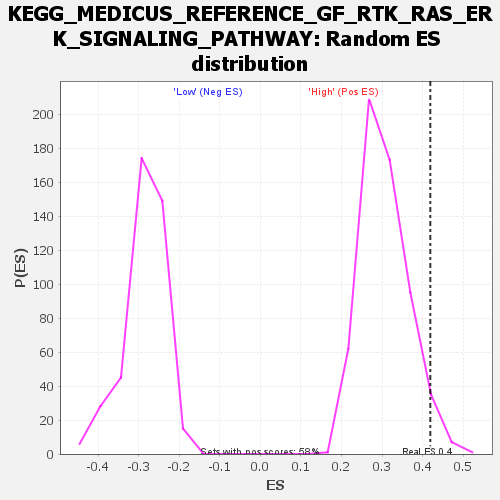

| Dataset | WG6v3.MRPL3.cls#High_versus_Low.MRPL3.cls#High_versus_Low_repos |
| Phenotype | MRPL3.cls#High_versus_Low_repos |
| Upregulated in class | High |
| GeneSet | KEGG_MEDICUS_REFERENCE_GF_RTK_RAS_ERK_SIGNALING_PATHWAY |
| Enrichment Score (ES) | 0.4190619 |
| Normalized Enrichment Score (NES) | 1.374777 |
| Nominal p-value | 0.030874785 |
| FDR q-value | 0.53334403 |
| FWER p-Value | 1.0 |

| SYMBOL | TITLE | RANK IN GENE LIST | RANK METRIC SCORE | RUNNING ES | CORE ENRICHMENT | |
|---|---|---|---|---|---|---|
| 1 | IGF1 | IGF1 | 23 | 0.375 | 0.0789 | Yes |
| 2 | VEGFC | VEGFC | 158 | 0.246 | 0.1245 | Yes |
| 3 | ANGPT1 | ANGPT1 | 230 | 0.214 | 0.1664 | Yes |
| 4 | FGF7 | FGF7 | 255 | 0.205 | 0.2089 | Yes |
| 5 | PGF | PGF | 378 | 0.174 | 0.2397 | Yes |
| 6 | EFNA1 | EFNA1 | 716 | 0.128 | 0.2495 | Yes |
| 7 | IGF2 | IGF2 | 740 | 0.126 | 0.2752 | Yes |
| 8 | PDGFC | PDGFC | 766 | 0.123 | 0.3002 | Yes |
| 9 | PDGFD | PDGFD | 846 | 0.116 | 0.3208 | Yes |
| 10 | NGF | NGF | 871 | 0.114 | 0.3438 | Yes |
| 11 | FGF1 | FGF1 | 931 | 0.109 | 0.3641 | Yes |
| 12 | NTF3 | NTF3 | 1199 | 0.092 | 0.3698 | Yes |
| 13 | FLT3 | FLT3 | 1285 | 0.087 | 0.3841 | Yes |
| 14 | ERBB2 | ERBB2 | 1555 | 0.076 | 0.3865 | Yes |
| 15 | FGFR1 | FGFR1 | 1736 | 0.070 | 0.3920 | Yes |
| 16 | ANGPT2 | ANGPT2 | 2107 | 0.059 | 0.3855 | Yes |
| 17 | PDGFA | PDGFA | 2123 | 0.059 | 0.3973 | Yes |
| 18 | NTRK2 | NTRK2 | 2132 | 0.059 | 0.4093 | Yes |
| 19 | PDGFRA | PDGFRA | 2240 | 0.056 | 0.4157 | Yes |
| 20 | MAPK3 | MAPK3 | 2807 | 0.044 | 0.3959 | Yes |
| 21 | NRAS | NRAS | 2936 | 0.042 | 0.3983 | Yes |
| 22 | MAP2K1 | MAP2K1 | 3064 | 0.040 | 0.4002 | Yes |
| 23 | MET | MET | 3084 | 0.040 | 0.4078 | Yes |
| 24 | ERBB3 | ERBB3 | 3108 | 0.040 | 0.4150 | Yes |
| 25 | TEK | TEK | 3235 | 0.038 | 0.4166 | Yes |
| 26 | FLT1 | FLT1 | 3341 | 0.037 | 0.4191 | Yes |
| 27 | KITLG | KITLG | 3493 | 0.035 | 0.4187 | No |
| 28 | PDGFRB | PDGFRB | 3869 | 0.030 | 0.4057 | No |
| 29 | HRAS | HRAS | 3892 | 0.030 | 0.4110 | No |
| 30 | FGF4 | FGF4 | 4257 | 0.027 | 0.3978 | No |
| 31 | EFNA4 | EFNA4 | 4563 | 0.024 | 0.3871 | No |
| 32 | NGFR | NGFR | 4669 | 0.022 | 0.3864 | No |
| 33 | BDNF | BDNF | 4942 | 0.020 | 0.3767 | No |
| 34 | ANGPT4 | ANGPT4 | 5113 | 0.019 | 0.3719 | No |
| 35 | FGFR4 | FGFR4 | 5323 | 0.017 | 0.3648 | No |
| 36 | VEGFB | VEGFB | 5459 | 0.016 | 0.3613 | No |
| 37 | FGF22 | FGF22 | 5772 | 0.015 | 0.3483 | No |
| 38 | CSF1R | CSF1R | 6157 | 0.012 | 0.3310 | No |
| 39 | EREG | EREG | 6370 | 0.011 | 0.3225 | No |
| 40 | AREG | AREG | 6414 | 0.011 | 0.3226 | No |
| 41 | FGF3 | FGF3 | 6739 | 0.009 | 0.3078 | No |
| 42 | FLT3LG | FLT3LG | 7391 | 0.007 | 0.2756 | No |
| 43 | EGF | EGF | 7551 | 0.006 | 0.2686 | No |
| 44 | GRB2 | GRB2 | 7750 | 0.005 | 0.2594 | No |
| 45 | EFNA2 | EFNA2 | 7751 | 0.005 | 0.2605 | No |
| 46 | KIT | KIT | 7752 | 0.005 | 0.2616 | No |
| 47 | FGF8 | FGF8 | 7776 | 0.005 | 0.2615 | No |
| 48 | FLT4 | FLT4 | 8325 | 0.003 | 0.2339 | No |
| 49 | NRTN | NRTN | 8897 | 0.001 | 0.2045 | No |
| 50 | FGF21 | FGF21 | 9056 | 0.000 | 0.1964 | No |
| 51 | MAPK1 | MAPK1 | 9936 | -0.003 | 0.1515 | No |
| 52 | BRAF | BRAF | 9945 | -0.003 | 0.1516 | No |
| 53 | ARTN | ARTN | 10118 | -0.003 | 0.1434 | No |
| 54 | PSPN | PSPN | 10175 | -0.003 | 0.1413 | No |
| 55 | FGFR3 | FGFR3 | 10184 | -0.003 | 0.1416 | No |
| 56 | FGF2 | FGF2 | 10517 | -0.005 | 0.1254 | No |
| 57 | HGF | HGF | 10661 | -0.005 | 0.1191 | No |
| 58 | FGF20 | FGF20 | 10900 | -0.006 | 0.1081 | No |
| 59 | FGF6 | FGF6 | 11238 | -0.007 | 0.0923 | No |
| 60 | FGF16 | FGF16 | 11255 | -0.007 | 0.0930 | No |
| 61 | GDNF | GDNF | 11608 | -0.009 | 0.0767 | No |
| 62 | KRAS | KRAS | 11903 | -0.010 | 0.0637 | No |
| 63 | FGF19 | FGF19 | 11955 | -0.010 | 0.0632 | No |
| 64 | FGF9 | FGF9 | 12594 | -0.013 | 0.0331 | No |
| 65 | RAF1 | RAF1 | 12676 | -0.014 | 0.0318 | No |
| 66 | EFNA3 | EFNA3 | 13325 | -0.018 | 0.0021 | No |
| 67 | CSF1 | CSF1 | 13404 | -0.018 | 0.0019 | No |
| 68 | SOS1 | SOS1 | 13839 | -0.021 | -0.0161 | No |
| 69 | FGF17 | FGF17 | 14033 | -0.022 | -0.0213 | No |
| 70 | FGF23 | FGF23 | 14158 | -0.023 | -0.0228 | No |
| 71 | FGF5 | FGF5 | 14223 | -0.024 | -0.0210 | No |
| 72 | ARAF | ARAF | 14350 | -0.025 | -0.0223 | No |
| 73 | PDGFB | PDGFB | 14570 | -0.026 | -0.0279 | No |
| 74 | INS | INS | 15656 | -0.037 | -0.0762 | No |
| 75 | EFNA5 | EFNA5 | 15931 | -0.040 | -0.0819 | No |
| 76 | NTF4 | NTF4 | 16391 | -0.046 | -0.0958 | No |
| 77 | TGFA | TGFA | 16413 | -0.047 | -0.0869 | No |
| 78 | FGF18 | FGF18 | 16566 | -0.049 | -0.0844 | No |
| 79 | MAP2K2 | MAP2K2 | 17016 | -0.056 | -0.0957 | No |
| 80 | SOS2 | SOS2 | 17176 | -0.059 | -0.0914 | No |
| 81 | EGFR | EGFR | 17207 | -0.059 | -0.0803 | No |
| 82 | FGF10 | FGF10 | 17335 | -0.062 | -0.0737 | No |
| 83 | ERBB4 | ERBB4 | 17527 | -0.065 | -0.0696 | No |
| 84 | EPHA2 | EPHA2 | 18085 | -0.081 | -0.0812 | No |
| 85 | RET | RET | 18092 | -0.081 | -0.0643 | No |
| 86 | VEGFA | VEGFA | 18170 | -0.083 | -0.0505 | No |
| 87 | INSR | INSR | 18619 | -0.105 | -0.0514 | No |
| 88 | NTRK1 | NTRK1 | 18905 | -0.125 | -0.0394 | No |
| 89 | KDR | KDR | 19073 | -0.144 | -0.0173 | No |
| 90 | IGF1R | IGF1R | 19215 | -0.166 | 0.0107 | No |

